Write statistics (mean and 95% conf. int.) to a text file.
The format has three columns: dim mean ci_offset where dim is the optional dimension argument, mean is the mean value and ci_offset is the 95% confidence interval offset, so the 95% CI is mean - ci_offset, mean + ci_offset.
real(kind=dp) function pmc_stats::student_t_95_coeff
(
integer, intent(in)
n_sample
)
Return a fairly tight upper-bound on the Student's t coefficient for the 95% confidence interval.
The number of degrees of freedom is one less than n_sample. If a set of numbers has sample mean and sample standard deviation , then the 95% confidence interval for the mean is 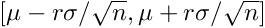, where r = student_t_95_coeff(n_sample).
The method used here was written by MW on 2011-05-01, based on the following empirical observation. If 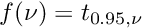 is the function we want, where 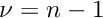 is the number of degrees-of-freedom, then set 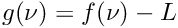, where 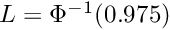 is the limiting value given by the Gaussian CDF . We observe numerically that 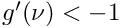 and 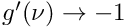 as 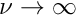. Thus 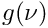 is well-approximated by 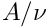 for some . Furthermore, if 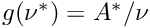, then 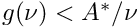 for 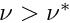. We thus have 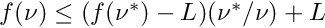 for 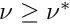. By using a sequence of known 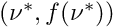 pairs we can thus construct a fairly tight upper bound.
This implementation has an error of below 0.1% for all values of n_sample.
Given a sequence of data x(i) for i = 1,...,n, this should be called like
do i = 1,n
call update_mean_var(mean, var, x(i), i)
end do
After each call the variables mean and var will be the sample mean and sample variance of the sequence elements up to i.
This computes the sample mean and sample variance using a recurrence. The initial sample mean is 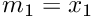 and the initial sample variance is 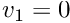 for 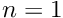, and then for 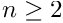 we use the mean update
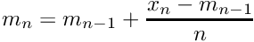
and the variance update
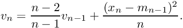
Then 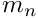 and 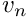 are the sample mean and sample variance for 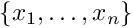 for each .
The derivation of these formulas begins with the definitions for the running total
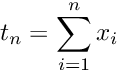
and running sum of square differences
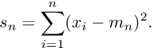
Then the running mean is 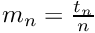, the running population variance is 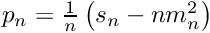, and the running sample variance 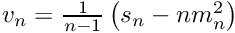.
We can then compute the mean update above, and observing that
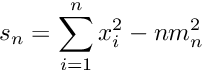
we can compute the sum-of-square-dfferences update identity
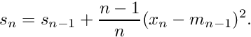
The algorithm then follows immediately. The population variance update is given by
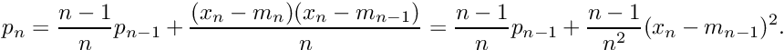
This algorithm (in a form where and 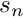 are tracked) originally appeared in:
B. P. Welford [1962] "Note on a Method for Calculating Corrected
Sums of Squares and Products", Technometrics 4(3), 419-420.
Numerical tests performed by M. West on 2012-04-12 seem to indicate that there is no substantial difference between tracking versus .
The same method (tracking and ) is presented on page 232 in Section 4.2.2 of Knuth:
D. E. Knuth [1988] "The Art of Computer Programming, Volume 2:
Seminumerical Algorithms", third edition, Addison Wesley Longman, ISBN 0-201-89684-2.
An analysis of the error introduced by different variance computation methods is given in:
T. F. Chan, G. H. Golub, and R. J. LeVeque [1983] "Algorithms for
Computing the Sample Variance: Analysis and Recommendations", The American Statistician 37(3), 242-247.
The relative error in of Welford's method (tracking and ) is of order 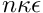, where is the machine precision and is the condition number for the problem, which is given by
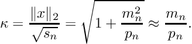
This analysis was apparently first given in:
T. F. C. Chan and J. G. Lewis [1978] "Rounding error analysis of
algorithms for computing means and standard deviations", Technical Report No. 284, The Johns Hopkins University, Department of Mathematical Sciences.
Parameters
[in,out]
mean
Mean value to update (on entry 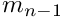, on exit ).
[in,out]
var
Variance value to update (on entry 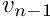, on exit ).